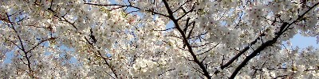

strange music page
* * * 2003.3
-2003.5.3 opabinia (before)
#ちょっとトップの配置を変えてみました。ライヴ情報が下に伸びすぎて間抜けな感じになったので。フォント小さいと見にくいかな。
えーと色々行きたいライヴ情報が入ってきまして、
オパビニアの7/11と清水一登ソロの6/13ってのはこっち見てみて
んで、TAKEさんとこで見かけたんですけど、7/19に佳村萌+鬼怒無月+勝井祐二ってのが有って。前に下北沢LADY JANEで見たんですけど、死ぬほど良かったので。また演ってくれて幸せ。
あと（佳村萌さんの追っかけみてーだなぁ）、6/3は吉祥寺STAR PINE'S CAFEにて演劇の音楽のイベントみたいです。
ほとらぴからっ(佳村萌+張紅陽+浦山秀彦+whacho)と美尾ストリングス(美尾洋乃+美尾洋香,ゲストに福原まり+ISSAY)とOKIDOKI(多田葉子+鬼頭哲+臼井康浩)とくものすカルテットっていう自分好みの組み合わせのライヴ。
とりあえず5/24のささのみちる&3億円(ホッピーとかwhachoとかもいるみたい)のゲストでも「ほとらぴからっ」は出るようです。
そんなわけで、今から吉祥寺MANDALA-2のオパビニアのライヴへ。
♪opabinia/(slight)googli-moogli
-2003.4.29 electric dolly
#福原まり見たさのために初台DOORSへISSAY meets DOLLYを見てきました。最前列の女の子がキャーキャー言うバンドなんて生まれて初めてじゃなかろうか。美尾洋乃(ex-REAL FISH,MIO FOU)のバイオリンがかっこよかった。
あ、6/3に吉祥寺STAR PINE'S CAFEでは「くものすカルテット/ほとらぴからっ/美尾ストリングス+ISSAY+福原まり/OKIDOKI」ってのが有るみたい。とりあえず行く。
あと、今ごろ気付いたんですけど、オパビニアのCDに見慣れるマークが有ると思ったら、このCDってJASRACじゃなくってe-Licenceの著作権管理なんですね。
誰の選択かわかんないけど、自分の好きなCDを出した人が音楽の権利について新しい形を見据えたよーな選択をしてくれた事を嬉しく思います。
♪fishermen tit tot
-2003.4.28
#えーと最近、CD買ったのとかライヴ見に行ったのとかにサイトの更新速度が追い着いてません。
とりあえず、Yoshimi and Yuka/flower with no colorとArea/Arbeit macht freiなんて。
清水一登さんと佐藤正治さんの加入したヒカシューのライヴも久々に見てきて面白かったです。ちょっと時間が短かったよーな気もしたけど。
yoshimi and yuka/mow deck in eye
-2003.4.22 new charactor
#手塚治虫のブラックジャックの話してたら、会社の人曰く、
「あれ何だっけ〜人殺しちゃうヤツ・・・ ドクター・キノコ だっけ？」
・・・・・・違います。というか、そいつ多分なんかヤバイです。俺が想像するに頭から煙が出ている。
あ、SOFTWORKS来日だそうです。CD買ってないけど、見に行こうかな。Hugh Hopper+Elton Deanが見たいだけなような気もするけど。
♪opabinia/pre-cambria dreamin'
-2003.4.20 free tibet
#途中まで色々書きかけてやめちゃった。free tibetって書いてあるTシャツ見て、ちょっと色々思ったんだけど。
とりあえず最近買ったCD:
- 空気公団/こども
- coa recordsに戻っての新譜、相変わらずイイっす。
- 駒沢裕城/イン・コンサート
- 向島ゆり子、篠田昌巳、横澤龍太郎など参加。
- stooges/my girl hates my heroin
- オフィシャルアルバムじゃなかったのね・・・\800
- Herios Creed/Lactating Purple
- 元Chromeの人、昔のインダストリアルっぽいフランジャーバリバリの音。ダサかっこいい。\300
- SAKEROCK/YUTA
- なんだか愉快なインスト。絶対イイ奴らだと思う。
- 三宅純/星ノ玉ノ緒
- 初めて買いました、極端に方向性の違う曲ばっかり。不思議な感じ。
あと、improvised music from Japanの雑誌(CD付き)を買いました。このジャンルの本としては唯一じゃないかなぁ、気難しい文章は嫌いなんだけど、情報ソースとして紙媒体ってまだ重要と思います。吉田アミのCDが欲しくなった。継続を望みます。
♪空気公団/白のフワフワ
-2003.4.17 opabinia
#つーーーーーーーーーーーーーーーーーーーーーーーーーーーーーーーーーーーーーーーーいにリリースされました。オパビニアの1st。さっきからずーっとコレばっかし聴いてる。
♪opabinia/ヒョーロク玉
-2003.4.16 helter-skelter
#岡崎京子さんの事故に遭う直前に連載されていた漫画です、よーやく出版されたようです。一生懸命電車の中で読んでたら乗り過ごした。
あと、読んだ後、ちょっと凹んだ。その2日後に友達に古谷実の「ヒミズ」（1,2巻しか読んでなかった）を読ましてもらってまた凹んだ。
-2003.4.12 bun-bun-bububun
#飲み会。生まれて初めて「数取り団」をやりました。げに楽しかった。
-2003.4.11 shimizu-ohta-umezu
#青山一丁目→大泉学園への道。なんで大江戸線両国方面に乗っちゃうかなぁ・・・あわててJRに乗り直して、大泉学園in Fへ。清水一登+梅津和時+太田恵資のライヴへ。
-2003.4.7 views
 #修理したMDを受け取りに渋谷の電気屋へ。「\15,000以上だったら修理するのヤメます」って言ったんですけど、修理額\14,595(税込)・・・・ピンポイント爆撃(超小規模)かよ。
#修理したMDを受け取りに渋谷の電気屋へ。「\15,000以上だったら修理するのヤメます」って言ったんですけど、修理額\14,595(税込)・・・・ピンポイント爆撃(超小規模)かよ。
ついでにディスクユニオンを物色。Lars Hollmer/utsikterってのはSamla Mammas Manna/SOLAのLars Hollmerの2000年のアルバム。トラッドで室内楽でチェンバーで可愛らしい音楽。
とりあえず、バグダッド占領して、それからどーするつもりなんだろう？なんだか星条旗振ってる映像を見かけたんだけど、アレ見てイラクの人達は何て思うんだろう？
ところで米軍って何でイラクに攻め込んでるんだっけ？
♪Lars Hollmer/In Limbo
-2003.4.6 cherry blossom
#花見しました。

♪篠田昌巳/KATINKA
-2003.4.5 configure - make - make install
#あーもー会社のサーバがさぁぁぁぁ、もう。
とりあえず備忘録。freetype-2.1.2-7はなんだか日本語がダメ（んな、話見たことないんだけどなぁ・・・）→freetype-2.0.9-2に戻し。
・・・・気付くのに数時間かかったよ。
とりあえず、サーバのセットアップを終えて吉祥寺へ。友達に電話したら「LOFTの2階の散髪屋にいる〜」と聞こえたんですけど、ほんとは「LOFTの近くの2階のトンカツ屋にいる〜」でした。
で、吉祥寺SILVER ELEPHANTへ、久々に行きました。当然の如くBGMはプログレ、和む。
知り合いのバンド(GPNZ)は出だしの一番フリーな部分がとてもかっちょよかったです。とりあえず今のとこベストかな。
次はSOLAとかで何回か見た伏見蛍さんのバンド。えーととってもテクニカル、やっぱり凄いなぁと思いました。あんまり好きな音では無いけど。
最後はばんどびびるってバンド。ギターの人の表情がが面白かったです。
寒くて頭痛かったんで途中で帰りました。
ya-to-i/cycle
-2003.3.30 cat box
#えーと、西麻布の山下さんの引越し記念+誕生会っちゅーことで。行ってまいりました。山下邸を探して歩いてたら俺の横をフェラーリがズゴーと通り過ぎて行きました。すげぇ
New山下さんの家はすげー広さで、前にウチで鍋やったときと同じ位の人数だったんですけど、この人口密度の差は何よ？といった感じ。
何が「cat box」なのかっつーと、warehouseの曲名でも有るんですけど、上のリンクの4/1の日記の画像を見てください。
しっかし誕生パーティかぁぁぁ、素直に羨ましく思いました。人望の為せるワザでしょうか？
そして帰り際、大使館の建物かと思ったらフツーにマンションだったみたい。ぶるぢょあぢー。
♪world standard/エル・スール